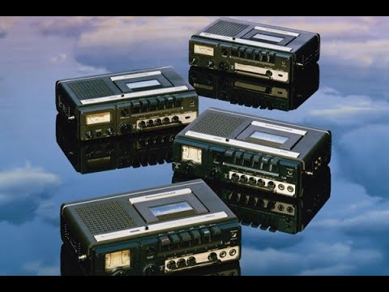
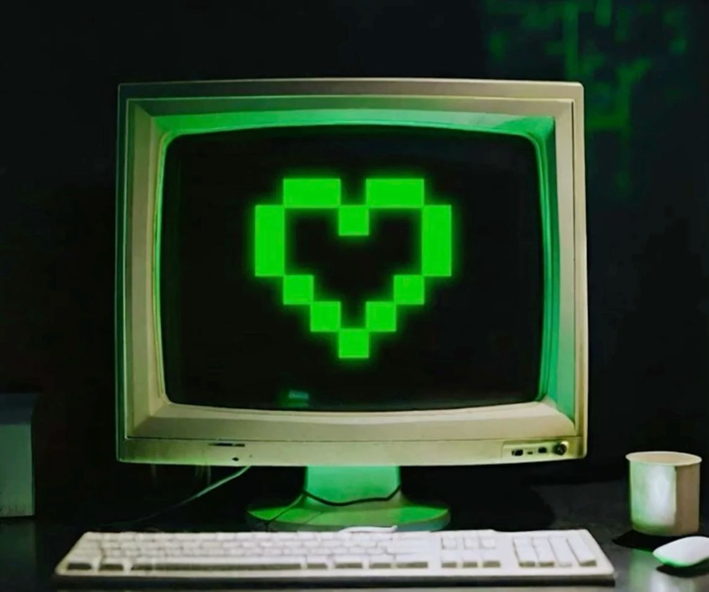

(англ. Lostwave)
— термин, которым обозначаются музыкальные композиции, происхождение (название, имена исполнителей, даты записи, выпуска и другие данные) которых неизвестно. Такие треки становятся предметом краудсорсинговых онлайн-исследований, направленных на выявление их первоисточников.
Песня «Subways of Your Mind» (в период поисков обычно — «Like the Wind», по строчке из её текста, получившая звание «самой загадочной песни в Интернете») была записана подростком Дариусом из радиопередачи, которая транслировалась на западногерманской общественной радиостанции Norddeutscher Rundfunk (NDR 1). Из записи были вырезаны речи ведущих, что и привело к утрате точной даты эфира и названия песни. Песня была впервые опубликована в интернете в период с 2004 по 2007 год, но поиск её не привлекал внимания широкой публики до 2019 года, когда бразильский подросток Габриэль да Силва Виейра узнал о ней от Николаса Суньиги из испанского независимого звукозаписывающего лейбла Dead Wax Records. Он загрузил отрывок песни на YouTube и несколько музыкальных сообществ Reddit, в конечном итоге создав сабреддит r/TheMysteriousSong. Вскоре к поискам информации о композиции подключились тысячи заинтересовавшихся этой историей пользователей интернета, они стали координировать усилия: прорабатывались всевозможные зацепки, выдвигались разнообразные версии, было проанализировано творчество сотен немецких исполнителей того времени — тем не менее, за долгое время никаких серьёзных результатов получено не было, хотя в 2021 году была получена более качественная запись искомой композиции. Поиски, продолжавшиеся 17 лет, завершились успехом 4 ноября 2024 года, когда «Самая загадочная песня в Интернете» была окончательно опознана как записанная в 1984 году композиция «Subways of your Mind» группы Fex из города Киль, ФРГ. Это произошло, когда один из участников поиска исследовал архивы Nordwest-Zeitung и обнаружил в них информацию об этой самой группе, смог связаться с одним из её бывших участников и получил от него несколько записей из дискографии Fex, среди которых была обнаружена и сразу опознана «Subways of your Mind».
Долгое время в сети ходил лишь короткий фрагмент клипа — его в 2017 году сняли на камеру с экрана телевизора (петербургский канал NBN). Люди годами гадали, кто поёт. Прорыв случился в 2024 году: энтузиасты обратились в Российское авторское общество (РАО), и там подтвердили имя исполнительницы. Позже Наталья сама вышла на связь с поисковиками и подтвердила участие. А в сентябре 2025 года случилось ещё одно важное событие: пользователь ПОЗИТИВ оцифровал с Betacam-кассеты певицы Натальи Верич почти полную версию клипа. Так что сейчас можно послушать песню целиком и посмотреть видео. Клип снимали в павильонах «Ленфильма», режиссёр — Сергей Кальварский. В записи участвовали кларнетист и виолончелист. После нескольких трансляций на NBN ролик фактически пропал из широкого доступа — у участников съёмок не осталось копий, поэтому он и стал «лоствейвом».
В 2021 году пользователь с ником Carl92 выложил на сайте WatZatSong 17‑секундный фрагмент песни. Он нашёл его в старых файлах на резервной копии DVD и не знал ни названия, ни исполнителя. Из‑за строчки «Everybody knows that» трек стали условно называть Everybody Knows That (EKT). Фрагмент быстро разошёлся по интернету.Люди пытались угадать, откуда песня, предполагали разные варианты — от рекламных джинглов до невыпущенных демо известных групп. Участники сообщества анализировали звучание: узнавали драм‑машину LinnDrum и синтезатор Yamaha DX7 — это помогло сузить период записи до середины 1980‑х. Были и скептические версии, например, что трек — мистификация или сгенерирован ИИ. В апреле 2024 года пользователь Reddit под ником south_pole_ball обнаружил полную версию песни: она использовалась как саундтрек в фильме Angels of Passion (1986). Так удалось установить авторов — братьев Кристофера и Филипа Бут. После раскрытия тайны Кристофер Сент‑Бут подтвердил историю и создал вместе с братом альбом Ulterior Motives — The Lost Album. В альбоме появилась новая версия UM, в которой использовали сохранившиеся мультитреки (ударные, бас, демо‑гитару), а вокал и клавишные перезаписали. В конечном итоге, братья Бут создавали альбомы, в которых есть материал песен которые они писали очень давно, но которые большой популярности не возымели. В начале лета 2026 братья Бут анонсировали документалку и песне UM, в которой будет ремастеред-версия UM, которая выйдет в сентябре-октябре.
Одним из примеров советского лоствейва можно считать инструментальную пьесу из 1-го и 10-го выпусков мультсериала «Ну, погоди!» под условным названием «Урна». Данная композиция была написана в 1960-е годы и регулярно звучала в СССР — в частности, она была использована в прогнозе погоды самых первых выпусков телепрограммы «Время» в январе 1968 года, а также просто звучала на советском радио. В 2000-х и 2010-х годах группа энтузиастов с форума www.beatles.ru стала активно разыскивать и пытаться опознать «Урну», обращаясь в различные архивы и к коллекционерам старой музыки, но почти все эти попытки оказались неудачными. Лишь в 2018 году участник темы на beatles.ru о музыке из «Ну, погоди!» Дмитрий Фокин смог найти в архиве «Союзмультфильма» и оцифровать полную версию «Урны», после чего появилась версия, что эту мелодию мог исполнять танцевальный ансамбль Венгерского радио, а вокализ в середине найденной версии принадлежит певице Анне Адам, но эти данные не были подтверждены. В результате до сих пор неизвестны ни автор, ни исполнитель, ни название «Урны».
12 февраля 2021 года пользователь Reddit u/e-robotic опубликовал клип в сабреддите r/tipofmytongue, объяснив, что он искал трехсекундный фрагмент музыкального клипа, который был случайно записан поверх видео с ним в детстве. Он рассказал, что он канадец, 1993 года рождения, и единственная лирика, которую они узнали, была "World was so easy". В тот же день пользователь Reddit DO_FLETCHING идентифицировал водяной знак, видимый во фрагменте, как исходящий от телеканала под названием NCN (New Country Network), который существовал с 1 января 1995 года по 14 сентября 1996 года в Торонто, Онтарио, Канада, до изменения его названия на CMT. Кроме того, пользователь Reddit KIevenisms204 определил, что гитара, использованная в видео, — это Parker Fly, которая была впервые выпущена в 1993 году. 18 марта 2021 года автор обнаружил расширенную версию фрагмента на другой записи с той же кассеты и также опубликовал ее на r/tipofmytongue. 5 февраля 2024 года пользователь ShaiiValley опубликовал на YouTube видео о «малоизвестных интернет-аномалиях». Две недели спустя пользователь Reddit JadeLily_Starchild связался с Крисом Мерфи, басистом канадской альтернативной рок-группы Sloan. Он предположил, что песня принадлежит группе Big Picture, а мужчина на видео — участник группы Асиф Ильяс. В тот же день пользователь Reddit leerosevere полностью идентифицировал песню как "Just Passin' By" группы Big Picture, обнаружив в своей коллекции пластинок весь альбом с этой песней. Днём позже, 21 февраля 2024 года, Асиф выложил на YouTube полное музыкальное видео. А ещё через день участник группы Бенни Фонг опубликовал кадры живого исполнения песни от 11 сентября 1994 года. 29 февраля 2024 года Асиф и Бенни опубликовали акустическую версию песни. Асиф также выложил закулисные кадры съёмок музыкального видео и записи.
Песня была впервые опубликована на WatZatSong 4 ноября 2013 года пользователем morback. Он не предоставил никакой информации о песне, кроме более длинного отрывка. 11 октября 2014 года автор опубликовал полную версию на app.box.com, но по-прежнему не предоставил никакой информации о песне. 15 декабря 2014 года пользователь ID-Cancion повторно загрузил песню на YouTube, чтобы привлечь к ней больше внимания и, возможно, ускорить решение проблемы. Морбэк повторно загрузил песню на WatZatSong 7 января 2018 года. Он сказал, что записал ее на радиостанции Indy Rock Radio в Минске, Беларусь, в 2010 году. 21 мая 2024 года пользователь Reddit TZilantro_Slumber нашел песню, которую The Burns идентифицировали как Avail. TZilantro искал информацию о рок-сцене в Беларуси, что привело его к разговору с Вадимом из Tok Rukoo и, предположительно, morback, а затем к размышлениям о поиске единомышленников в других странах, таких как Россия, Украина, Латвия и Литва, и даже к попыткам связаться с людьми в Польше и Румынии. После обращения к нескольким группам он связался с группой Pompeya. Сначала он не получил от них ответа по поводу песни, но в конце концов ответ пришел. В ответ один из участников группы написал ему, что расспрашивал всех, кто мог бы узнать песню, пока басист группы Денис не узнал коллектив. После этого Помпея сообщил TZilantro название группы и всю песню целиком.
Всё началось в июле 2016 года, когда пользователь 4chan (раздел /mu/) опубликовал фото компакт-диска, найденного в благотворительном магазине Oxfam в Ноттингеме. На диске было название EP и изображение стилизованной аниме-девушки с обложки. При этом аудио с диска было сильно искажено «дисковой гнилью» (диском, повреждённым из-за химического распада). Фанатское сообщество взялось за поиски. Участники изучали каждую деталь упаковки, общались на сабреддитах и в Discord-сервере «Panchikord», даже пытались дозвониться до магазина, где был найден диск. В январе 2020 года одному из поисковиков удалось найти в Facebook профиль вокалиста группы Оуэйна Дэвиса. Он даже не подозревал, что его старая демозапись стала интернет-сенсацией. Вскоре удалось выйти и на других участников: гитариста Энди Райта и басиста Шона Ферреди. Четвёртый участник, барабанщик Джон, к тому моменту уже не был в контакте с остальными. Интересно, что участники группы сами не помнили о существовании EP — они записали его в подростковом возрасте, сделали всего около 30 копий на записываемых CD, раздавали друзьям и отправляли пару экземпляров лейблам и рецензентам, после чего группа распалась. После воссоединения в 2020 году группа нашла оригинальные мастер-ленты (которые, к счастью, сохранились) и выпустила ремастированную версию альбома. Это положило начало возрождению Panchiko: они начали гастролировать и выпустили другие ранее неизданные треки.